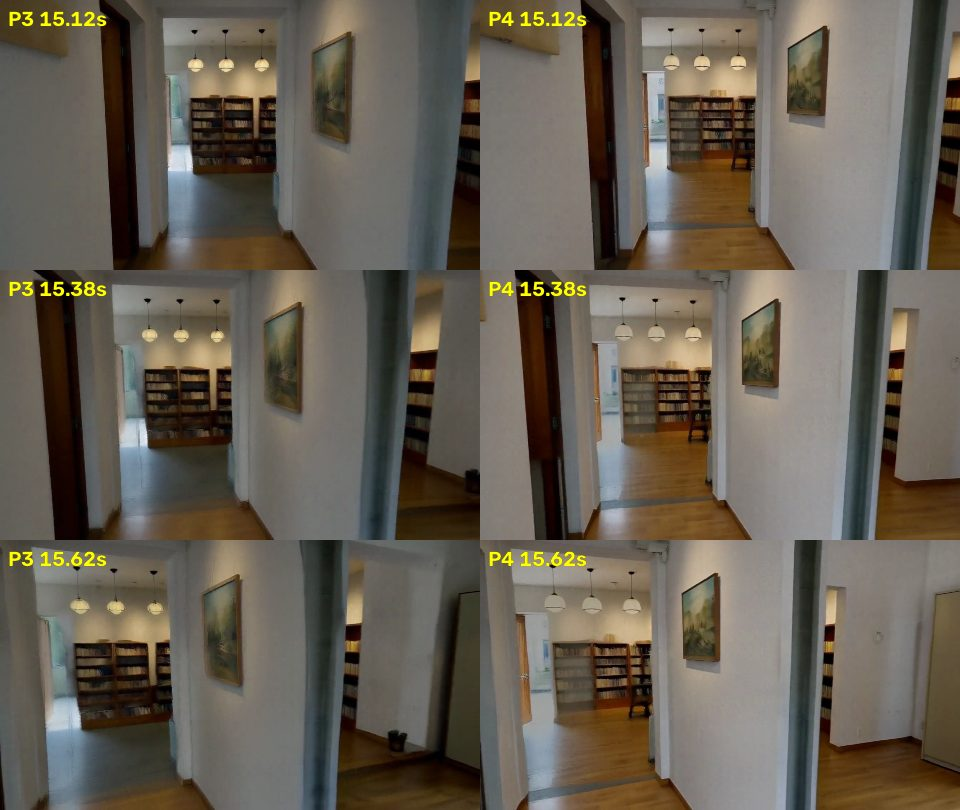
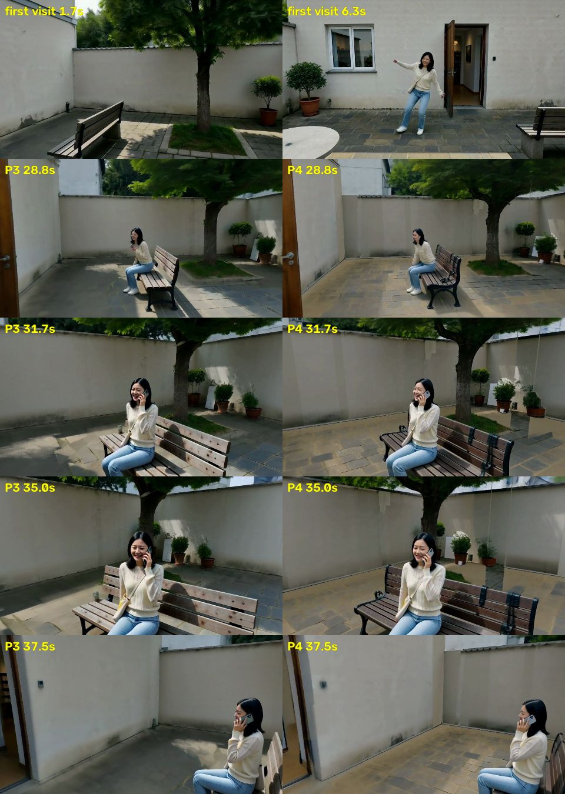
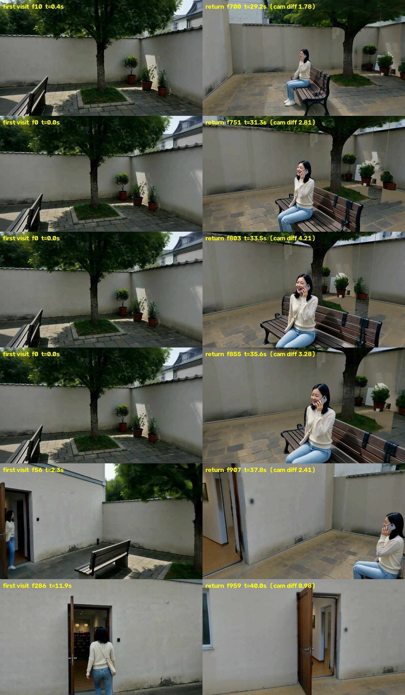
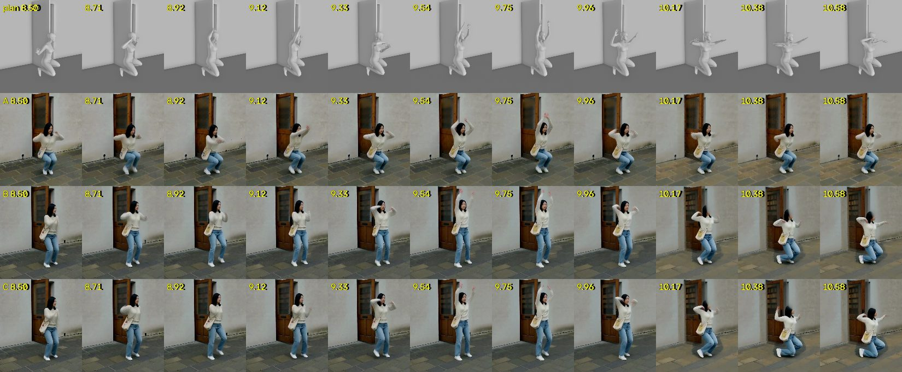
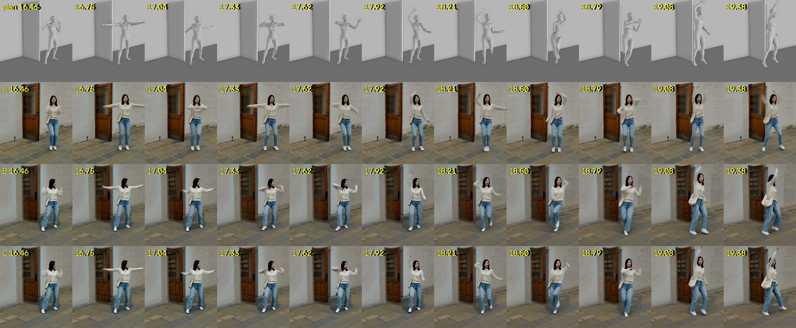

一镜到底：从一段剧本到分钟级、带对白的连续镜头
任务
输入：一段剧本，粗糙的也可以，由规划器补全。可选：参考动作视频、人物照片、参考声音。
输出：分钟级、中间不剪辑的一条连续镜头，写实，带对白和环境声。相机可以穿门过廊，也能回到之前去过的地方。
难点：视频模型一次最多生成约 15 秒，只能分段生成再无缝接上；回到老地方时，场景、人、声音都要和之前一样；人不穿家具；动作要符合剧本或参考动作。
方法：一个世界状态，每段做三件事
世界状态 = 白模（3D 布局、人物去哪、相机怎么走）+ 三种记忆（场景长什么样、人长什么样、声音是什么样）。开拍前，场景记忆的初值就是带材质的白模：哪里是平墙、哪里有门窗、墙是灰泥、屋里是木地板、院子是小方砖，还没拍到之前就已经知道。
开拍前：大模型把剧本写成白模和剧情节拍 → 按剧情切段（交接放在镜头和人都闲的时候）→ Blender 渲染白模 → 从白模算出每段"镜头对着什么、人第几秒进画面、左右站位" → 大模型据此写每段的 prompt。
每一段：① 从世界状态渲染条件：深度、场景记忆、人物参考图、音色、动作参考 → ② H3 生成一次（4 张卡）→ ③ 登记回世界：画出来的场景贴回 3D（包括 H3 自己加的花盆这类东西），人在哪、长什么样存进人物记忆，台词存进声音记忆。下一段的所有条件都只从世界状态里取，不针对某个镜头单独调。
| 条件 | 怎么来 | 作用于哪几步（共 8 步） |
|---|---|---|
| 场景深度 | 看过的地方用记忆里的几何，没看过的用白模 | 全部 8 步 |
| 人的深度 | 前 2 步用真人体（SMPL-X）定位置、朝向和大致姿势；之后换成只表示占位的人形，动作细节和手机这类小道具交给 H3。接段时从上一段实际画到的位置开始，1.5 秒内回到规划路线 | 真人体 1–2，占位人形 3–8 |
| 场景记忆（硬抄） | 几何可靠、又看得清楚的表面照抄，见"场景记忆"一节；两段重叠的前 60% 每一步都整帧照抄上一段的画面（去掉人）。P4 起硬抄真的每一步都生效（之前只生效前 2 步） | 全部 8 步 |
| 场景记忆（软约束） | 每步之后把画面往"加了相应噪声的记忆"拉。墙和地面按看得清不清楚分三档：看清楚的一直拉到最后；半清楚的拉前 6 步；只远远或斜着看到的不用，和没看过的一样拉向带材质的白模。离门窗远的平墙全力度拉向材质白模。家具、植物这些按看过的颜色拉前 6 步 | 清楚的 1–8，半清楚的 1–6，平墙 1–6，模糊和没看过的 1–4 |
| 动作参考（搭档的方法） | 参考视频和我们的镜头视角不同：先恢复成 3D，从我们的机位渲染成灰模，再让 H3 同时看原视频和灰模生成参考视频 | 预处理里：灰模 1–6，原视频 3–8 |
| 人物参考图、音色 | 从人物记忆里按这一段会出现的角度挑；音色取这个人说过的第一句 | 全部 8 步 |
这一轮改了什么（P3 → P4）
P3 回来时有两处会漂：第二段开头的"鬼影柱子"，以及长椅前的地面从小方砖变成大石板。两处是同一个原因：第一次看到时离得远、角度斜，记下的是一块糊的，却被当成可靠的记忆锁住了。这一轮只改"记什么、信多少"，生成部分不动。
| 改动 | 做法 |
|---|---|
| 只记看清楚的 | 墙和地面上每个点记下"这一眼有多清楚"：离得近（4 米以内满分，8 米以外不算）、看得正（45° 以内满分，超过约 70° 不算）、像素够用。同一处被多次看到时，留最清楚的一眼，不再"第一眼为准"。清楚的一直约束到最后一步，半清楚的只约束前 6 步；模糊的干脆不用，和没看过的地方一样交给带材质的白模 |
| 硬抄真的每一步都生效 | 核对时发现，照抄输入挂在"第一路深度"上，而第一路深度（真人体）只用前 2 步，所以硬抄也只管了前 2 步。现在改成每一路深度都带上照抄输入 |


场景记忆：怎么做到"回来还是原样"

记什么（每段生成完）
- 开拍前就有的记忆：带材质的白模（免费的 CC0 照片材质）。第一段还没有任何画面可以参考，就用它当记忆，放在墙、地面和天花板上（家具、植物、人都不放）。物体只有真的在墙前面才留空，留空的边缘是渐变的。
- 取约 60 张关键帧，估出每个像素多远，变成带颜色的 3D 点；人用 SAM3 抠掉。
- 贴回白模：估出的深度和白模相差不到 8% 的地方（墙、地面），直接用白模的精确几何。窗户当成墙上的一块平面，和墙一样能照抄。
- 其余的点要有着落才收：落在某件规划物体的范围里（树、长椅、盆栽），或者是 H3 自己加、在这一段反复出现、立在地上的一团（新登记的物体）。哪儿都不挨着的点是深度估错了，直接丢掉，不会"穿墙"飞到别的房间。
怎么用（下一段的每一帧）
- 以看得最清楚的那一眼为准：每个点都记着清晰度（多近、多正）。只有明显更清楚的一眼才会替换旧的；只远远或斜着看过的，不拿来约束。
- 交接处整帧照抄：重叠段的前 60%，每一步都把上一段的画面（去掉人）抄过来，两段画的是同一条走廊。
- 硬抄：贴在白模上的表面，视角差 45° 以内、放大不到 1.6 倍就照抄；其他表面只在几乎同一视角照抄。
- 按清晰度分档：看清楚的墙和地面一直约束到最后；半清楚的只约束前 6 步，最后让模型重画细节；其余看过的东西（家具、植物）也是前 6 步。
- 还没看过的墙和地面：拉向带材质的白模，颜色先按已经画出来的部分校准；平墙全力度拉到第 6 步。
- 人身边按白模：她要坐的长椅整块用白模深度加人体，不抄记忆，靠背不会被切出锯齿。
prompt 也从白模来
每段的 prompt 由大模型自动写，但写之前先从白模算好它要用的事实，它只负责把事实写成通顺的描述：
- 哪些东西看得见：把每件家具、每个门窗投影到画面里，和白模深度比，被墙挡住的不算。
- 东西长什么样也从白模来：门洞是方顶还是圆拱、有没有门板，由几何算出来写给大模型，它只能用这些名字。T1 写了 arch，H3 画了圆拱，和上一段的方门洞接不上。
- 镜头先对着什么、人第几秒进画面、什么时候停下、转身、坐下：都从相机路径和人物路径算出来。
- 每 2 秒一张左右站位表：比如"窗 0.25，小雨 0.5，后门 0.65"，让 prompt 写"门在她右边"，而不是"门在她身后"。
- 写完自动检查：提到看不见的东西、人提前出现、时间越界、世界里没有的拱门，都打回重写。
人物与动作：规划只管"在哪、什么时候、朝哪"
- 动作不由白模定死：真人体只在前 2 步出现，决定她在哪、朝向、大致姿势；之后换成占位人形，走路、坐下、打电话的细节交给 H3。手机不画进深度图，由 H3 按 prompt 画出来。
- 人在哪也是世界状态的一部分：每段生成完量出她实际被画在哪；下一段从这个位置接着走，再慢慢回到规划路线，交接时人不跳。
- 人物记忆：开拍前生成角色原地转一圈的定妆视频，放进 8 个视角格；每段生成后把她抠出来按角度补进去（检查像不像，不像的不进）；下一段按会出现的角度挑参考图。
最新结果：后院 → 屋里 → 后院（P4，40 秒一镜到底）
剧情和 P3 一样：小雨从后门出来，在院子里跳一小段街舞（用了动作参考），回屋进工作间拿手机看，再走回院子，在长椅前转身坐下给妈妈打电话，镜头最后转回后门。按剧情切成 3 段：0–15.1、13.6–27.3、25.7–40 秒。第一段直接用 P3 的，只重跑后两段。

连续动作实验：一段 25 秒的舞，跨两个接缝
我们的题目是长视频里的连续动作，但之前的舞蹈都只有 4 秒，落在一段里面，从没让一个动作跨过接缝。这次专门测这件事：小雨在后院原地连续跳 25 秒 waacking（甩手舞），动作取自 AIST 舞蹈库的一段视频，用 GVHMR 恢复成 3D；镜头在她前方 3.6 米处慢慢绕。27.5 秒切成 3 段，两个接缝（9 秒、18 秒）都在舞蹈中间，第一个正好碰上她跪下。
比较三种做法，其余设置完全一样（场景记忆用的是 P4 的）：
| 组 | 做法 |
|---|---|
| A | 现在的方法：真人体深度只管前 2 步，后面交给 H3，不给动作参考 |
| B | A + 搭档的动作参考：每一段都先把原舞蹈从我们的机位重新"拍"一遍，作为参考视频交给 H3 |
| C | B + 动作交接：上一段画完后，用 GVHMR 把她实际被画成的姿势恢复成 3D，写回动作轨道；下一段的人体条件从这个姿势开始，再过渡回规划。交接照抄时连人一起抄 |


| 动作对上规划 | 第 1 / 2 / 3 段 | 接缝 1：对上规划 / 最快一下 | 接缝 2：对上规划 / 最快一下 | |
|---|---|---|---|---|
| 规划自己（参考上限） | 0.97 | 0.98 / 0.97 / 0.97 | 0.97 / 3.6 | 0.96 / 3.0 |
| A | 0.83 | 0.77 / 0.90 / 0.79 | 0.82 / 2.4 | 0.89 / 2.4 |
| B | 0.76 | 0.55 / 0.79 / 0.92 | 0.11 / 3.8 | 0.97 / 1.9 |
| C | 0.77 | 0.55 / 0.80 / 0.93 | 0.13 / 4.3 | 0.99 / 1.9 |
"对上规划"：用姿态估计找出她的 17 个关节，离规划位置不到身高 15% 的算对上。"最快一下"：重叠段里每帧关节移动最大的那一下，是整段舞平均速度的几倍。规划自己在这两处也有快动作（3.6 倍、3.0 倍），所以只有明显高过它，才算"跳了一下"。
看出来的
- 接缝本身看不出来：三组画面在接缝处都是连着的，墙、门、长椅三段一致。C 交接照抄时把人也抄进去，拼接那几帧的手臂重影就没了（B 在 8.8–9.3 秒还能看到一点）。
- 真正的问题是"跑偏后被拉回"：上一段没按规划做（B、C 的第一段没跪），下一段在重叠结束时会按规划突然跪下，人就"跳了一下"。C 的动作交接这次没消掉它，因为过渡只做到重叠段结束，而规划恰好在那一刻要跪。下一步：让过渡延续到重叠段之后 1–1.5 秒，并且按关节角度来过渡。
- 搭档的动作参考：帮助大，但不稳定。第二、三段的动作明显更像规划，跪地、抬腿、转身都画出来了，第三段 0.92，A 只有 0.79。第一段反而更差：她站着跳，0.55，A 是 0.77。
- 场景的小问题：10.2 秒起地面从灰变成米黄。原因是第一段没看清的地面交给了白模材质，材质原色是米黄，没有按已经画出来的颜色校正。修复已经写好，下一轮验证。另外托特包在第一个接缝后多了印花。
速度与自动化
| 环节 | R5 | R10 | 做了什么 |
|---|---|---|---|
| 动作参考预处理 | 19.5 分钟 | 8.8 分钟 | 同一个模型和 LoRA，改成 4 卡常驻显存（原来每一步都从 CPU 内存搬权重），结果和原来几乎一模一样 |
| 每段之间的空档 | 15 分钟 | 8 分钟 | 估深度、SAM3 抠人分到两张空卡上同时跑；人物记忆入库、听台词放到后台，和渲染场景记忆同时进行；台词每段只听一次；去掉了生成后的"查人数"（换种子重来救不了 prompt 写错的问题） |
| 生成（每段，含编解码） | 12–13 分钟 | 12–13 分钟 | 去噪本身约 7.5 分钟，其余是加载和编码 |
| 整条 40 秒 | 92.5 分钟 | 约 68 分钟 | 最后一段生成完不再做入库、抠人这些只给后面用的事 |
现在的问题
- 跑偏后被拉回（连续动作）：上一段没按规划做，下一段会在重叠结束时突然按规划做，人会"跳一下"。
- 动作参考时灵时不灵：有的段动作明显更准，有的段反而更差。
- 没看清的地面颜色会变：交给白模材质后用的是材质原色，没有和已经画出来的颜色对齐（修复已写好，待验证）。
- 东西还会变：长椅多了黑色铁架；盆栽开出白花，旁边多了一块白色的东西。这一轮的场景记忆只改了墙和地面，家具、植物还是老办法。
- 门框颜色：只远远看到过的表面现在交给白模，颜色不一定和周围一致（第二段开头的门框偏深）。
- 白模太简陋：长椅、树、花盆都是方块和圆柱。H3 会照着深度图的形状画，所以不能拿粗糙的形状去补细节。
- 脸：全身镜头里脸只有几十个像素，转头时会糊。